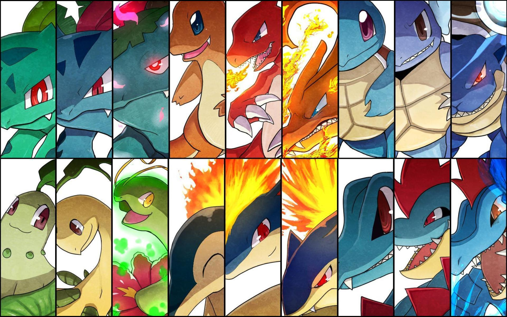
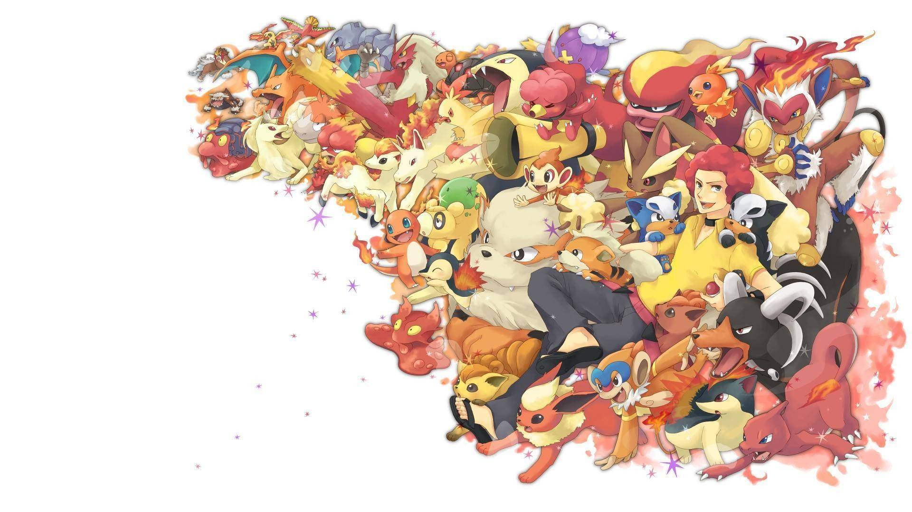
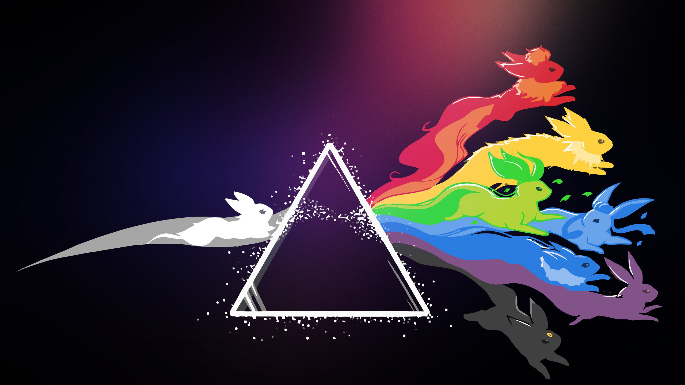

Pokémon (también abreviado PKMN; ポケットモンスター Pocket Monsters en japonés) es una franquicia de videojuegos que comenzó siendo de tipo RPG para las consolas de Nintendo creada por Satoshi Tajiri en 1995. Su éxito fue tal que abarcó otros géneros de videojuegos y campos del entretenimiento tales como una serie de anime, manga y una gran variedad de artículos de colección, como cartas del TCG, muñecos, etc.